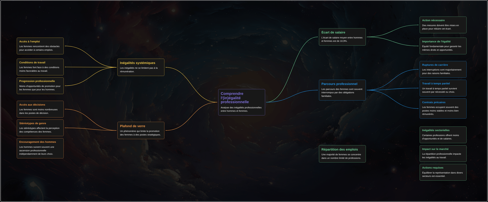

Solutions
Découvrez nos solutions pour un monde numérique plus inclusif.
Introduction
Plusieurs initiatives ont été mises en place pour promouvoir l'égalité des sexes dans le domaine du numérique. Cependant, pour cela, il faut comprendre ce qu’il ne va pas dans notre système :

Nos solutions
Nous proposons diverses solutions pour améliorer l'inclusivité dans le secteur numérique...
Initiatives mondiales
ONU Femmes
L'ONU Femmes a lancé plusieurs programmes pour promouvoir l'égalité des sexes dans le numérique, notamment en mettant les femmes et les filles au centre de l'innovation. Ces programmes visent à réduire la fracture numérique entre les sexes et à encourager la participation des femmes dans les domaines des sciences, de la technologie, de l'ingénierie et des mathématiques (STEM).
Programme de Développement des Nations Unies (PNUD)
Le PNUD travaille à dépasser les stéréotypes de genre et à promouvoir l'égalité des sexes dans la transformation numérique. Le programme vise à fournir aux femmes et aux filles un accès égal aux technologies numériques et à les protéger contre la violence en ligne.
Initiatives nationales
Canada
Le Canada a élaboré un manuel d'instructions pour l'égalité des sexes à l'ère numérique. Ce manuel propose des pratiques exemplaires pour soutenir l'égalité des sexes dans les contextes numériques et aborde les défis posés par le développement technologique.
Union européenne
L'Union européenne a mis en place des initiatives pour créer un Internet sûr, abordable et inclusif pour les femmes. Ces initiatives visent à protéger les femmes contre le harcèlement en ligne et à promouvoir leur participation dans les secteurs technologiques.
Solutions Personnelles

🤝 Mentorat et Réseautage
Créer des espaces de rencontre et des programmes de mentorat pour les femmes, afin de favoriser l’échange d’expériences et de connaissances dans le secteur numérique. Encourager les initiatives qui soutiennent les jeunes filles et les femmes tout au long de leur parcours, de l'école jusqu'au monde professionnel.

📝 Biais de Recrutement
Mettre en place des formations pour les recruteurs et les managers afin de réduire les biais de genre dans les processus de recrutement. L’objectif est d’assurer une représentation plus équitable des femmes à tous les niveaux des entreprises du secteur numérique.

📚 Formations et Ateliers
Organiser des formations et ateliers spécialement conçus pour les femmes, afin de renforcer leurs compétences numériques et leur offrir plus d’opportunités d’accès à des postes techniques. Ces ateliers devraient inclure des programmes de soutien pour surmonter la barrière des stéréotypes liés au genre.

🏆 Visibilité des Modèles Féminins
Mettre en avant des femmes qui réussissent dans le secteur numérique comme modèles inspirants. Ces figures féminines pourront témoigner de leur parcours et ainsi encourager d’autres femmes à s’engager dans ce domaine.
Conclusion
Ces initiatives montrent un engagement global à promouvoir l'égalité des sexes dans le domaine du numérique et à créer un environnement plus inclusif pour les femmes et les filles.